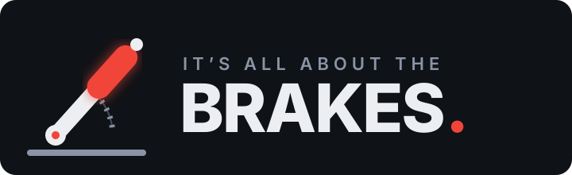

A separate mechanism, outside the agent
Local-first Agent safety for Windows
Every agent gets power.
Give it brakes.
TraceBrake is the human-controlled safety broker and black box for AI agents. It watches behaviour, records what matters and puts a deliberate control point between autonomous software and sensitive actions.
- Runs locally
- Windows 10/11
- GPL-3.0
- No account or telemetry

Current alpha: TraceBrake
SEE EVERY AGENT
GATE EVERY ACTION
KEEP THE HUMAN IN CONTROL
It’s all about the brakes
The permission prompt runs inside the agent.
TraceBrake does not.
An agent's permission prompt is code in the agent's own process, governed by the agent's own settings, and one flag turns it off. TraceBrake is a separate process. It does not read those settings and does not need the agent's cooperation to see it or stop it. The Agent Handbrake spec calls that a second brake and sets out four properties it has to have.
A stop that is a floor, not a request
The agent cannot release it
A present human must
Five scenarios
1 / 5
Described, not recorded. Each names the mechanism in the source.

TraceBrake does not yet claim conformance to its own spec. The spec says so. Plain-language version.
Why TraceBrake
AI moves at machine speed.
Accountability shouldn’t disappear.
Coding agents can launch processes, change tool configuration, handle credentials and drive browsers or devices. Most actions are useful. Some are stuck, surprising or far outside the operator’s intent.
Conventional antivirus sees isolated commands. Agent harnesses see only their own task. TraceBrake joins the context: which harness acted, how its behaviour is changing, what it is trying to reach and whether a person is actually present.
Orphaned shells and hung update processes
Risky commands without task attribution
Silent MCP and permission drift
Computer use without a shared safety boundary
One local control plane
Observe the whole system.
Intervene where it counts.
TraceBrake combines endpoint signals, harness identity and operator authority without sending your activity to a hosted service.
01
Behaviour engine
Risk is a pattern, not one scary command.
Attribute process trees to the harness that spawned them, detect hangs and orphans, and escalate behaviour through Watch, Alert, Alarm and Emergency.
Watch
Alert
Alarm
Emergency
02
Unified broker
One audited route to the outside world.
Broker browser and opt-in Android/ADB actions through a bounded surface, regardless of which authorised model or harness is driving.
03
Human authority
Presence is a security signal.
Presence Lock and per-harness trust settings distinguish attended work from actions that should ask, hold or stop when the operator is away.
OPERATOR PRESENCERequired for sensitive action
04
Black box
Evidence before explanation.
Keep an exportable local event history with source attribution, severity and the context needed to reconstruct what happened.
05
Vault
Secrets go to destinations—not agents.
Domain-bound credential resolution lets an approved executor fill a live destination without returning the secret to the requesting harness.
06
AI checks AI
A second harness can challenge the first.
Route concerning activity and attributed hand-offs to another connected model while keeping the operator as the final authority.
The control loop
Fast when it’s routine.
Deliberate when it matters.
Attribute
Connect the action to a harness, process tree and task episode.
Read context
Combine the command, target, trust level, behaviour and presence state.
Decide
Allow routine work, ask the operator, or refuse a bounded broker action.
Trace
Record the outcome so later review starts with evidence, not guesswork.
An honest boundary: TraceBrake is safety visibility and a control point for mediated actions—not a Windows sandbox. A process already running as your user may retain the same underlying access as you.

Open by design
Trust the controls.
Inspect the code.
The current TraceBrake alpha is open source under GPL-3.0-or-later. It runs locally on Windows, requires no account and sends no product telemetry.
- Runtime
- .NET / WPF
- Platform
- Windows x64
- State
- Local only
- Stage
- Alpha
TraceBrake is here
Autonomy needs accountability.
Formerly Foreman Agent Safety. Same mission, clearer name: give powerful agents accountable brakes.
Follow development on GitHub